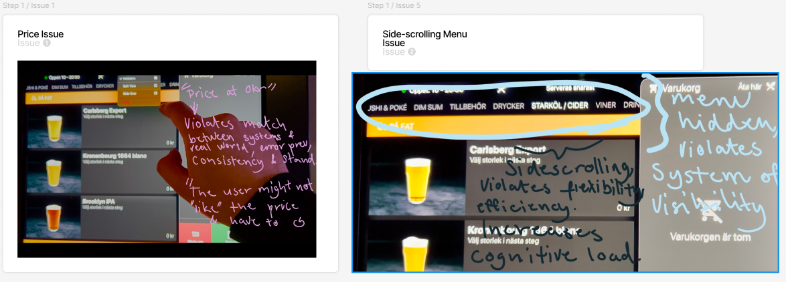

Restaurant Self-order UI Redesign
Overview
In this project, I applied usability principles to enhance a graphical user interface (GUI) by
identifying and resolving key usability issues. Using Nielsen’s 10 usability heuristics as a foundation,
I focused on improving system visibility, error prevention, and overall efficiency to create a more
intuitive and user-friendly experience.
Identified Issues & Solutions

1. Pricing Clarity & Consistency
Problem: Users encountered confusion due to unclear pricing, particularly the "0kr" display and lack of
structured cost breakdowns.
Solution: Implemented consistent pricing information in the menu, displaying base prices along with
additional costs per size. This ensures transparency and reduces unnecessary steps if users wish to
change their selections.
2. Navigation & Menu Functionality
Problem: Users had to press categories multiple times or ended up in unintended sections, increasing
frustration.
Solution: Improved the menu by making it more intuitive and implementing a recognition-based approach
instead of recall. This minimizes user effort by presenting all categories clearly at once.
3. Side-Scrolling Issues
Problem: The side-scrolling navigation made it difficult for users to find specific categories, leading
to inefficiency.
Solution: Designed a static category menu that eliminates the need for excessive scrolling, ensuring
users can quickly access relevant options.
4. Error Feedback & Prevention
Problem: Users were not informed when backend issues occurred, leading to confusion about selection
errors.
Solution: Introduced a pop-up notification that explicitly informs users when an error occurs, guiding
them to redo their selection instead of leaving them uncertain.
Design Process - Sketching & Ideation
Before implementing changes, I analyzed the impact of each issue on user experience. My sketches focused on reducing cognitive overload, adding visual cues, and ensuring seamless error prevention. Key improvements: Clearer category navigation to eliminate excessive scrolling. Pricing adjustments to streamline user decisions. Pop-up notifications for instant user feedback.
The transition from sketches to wireframes maintained the core design concepts with minor
refinements for better usability:
Consistency & Standards: The layout remained familiar to users, reducing the learning curve.
User Control & Freedom: A timer-based error message was replaced with a dismissible button, allowing
users to control when to close notifications.
Minimalist Design: Sizing labels were simplified to initials to reduce visual clutter.
Enhanced System Status Visibility: Added a scroll bar to indicate user progress through the menu,
improving navigation awareness.
You can look at the PDF if you want the whole caseDesign Process - Wireframing & Refinements